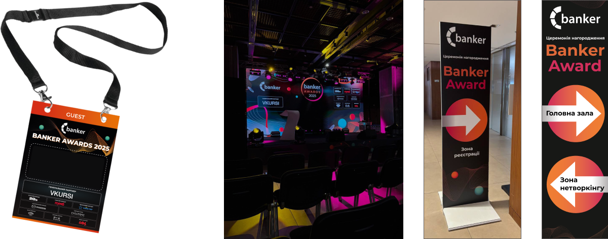
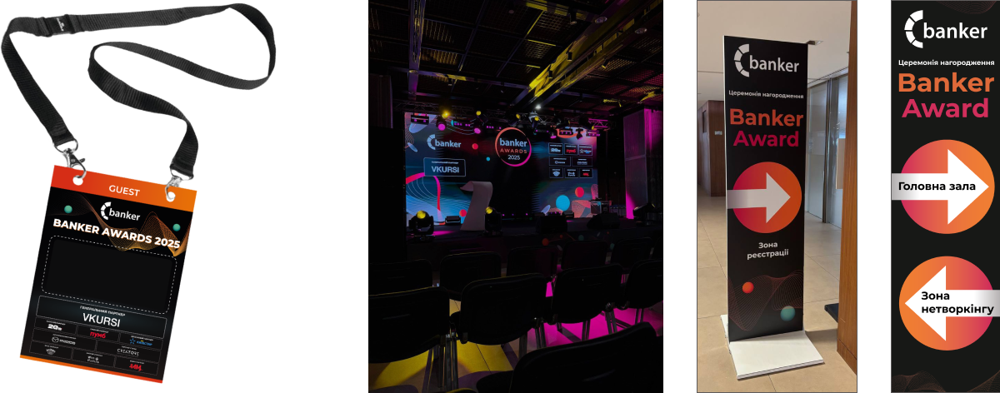
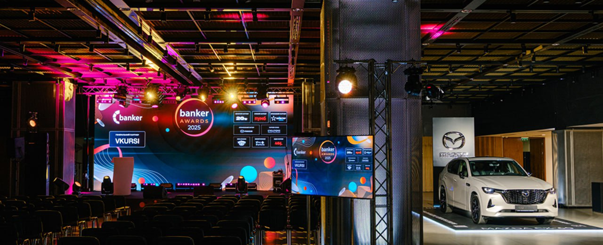

A collection of creative works that combine illustration, branding, and print design.
Cup Illustrations.
Vector illustrations created for cup prints.
Focused on playful compositions, clean shapes, and color balance for real-life application.
Personal
Sticker & Avatar.
A personal illustration project inspired by my own visual identity.
Designed in Adobe Illustrator as a recognizable element for branding and self-expression.
A custom sticker series created for a client who adores
her cat.
Designed as a fun and personalized way to express emotions in social media conversations.
Event Branding - Banking Awards.
A complete visual concept for an award ceremony, including photo zone design, badges,
and event signage.
The goal was to create a cohesive and elegant visual identity that reflected the
prestige of the event.
 

From the first impression to the final detail, the branding told a cohesive story of celebration, innovation, and excellence.
